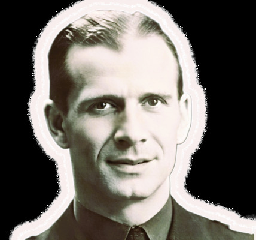
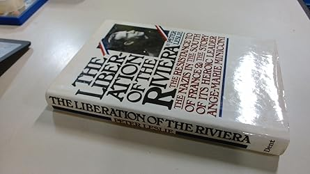

Discours de Sabine MINICONI, prononcé lors de l’inauguration de l’école "ANGE-MARIE MINICONI "
Beaucoup d’émotion en cet instant. Un moment pour bien sûr concrétiser l’hommage qu’il y a à rendre à mon grand père, Ange-Marie Miniconi dont j’ai pu être proche toute ma vie jusqu’à sa disparition en 1988.
Je ne développerai pas la base de l’homme politique, résistant ayant organisé avec plusieurs compagnons FTP la résistance sur la Côte d’Azur. Beaucoup de personnes encore présentes à ce jour ont pu vivre ce moment de la deuxième guerre mondiale. Des événements d’ailleurs très bien rapportés dans le livre que Peter Leslie a consacré à mon grand père : « The liberation of the riviera : la résistance dans le sud de la France et l’histoire de son héroïque leader le commandant Jean-Marie » en vente sur Internet et aux USA.
Mais ce qui est merveilleux dans ces minutes, c’est d’avoir donné le nom d’une école à mon grand père, lui-même instituteur toute sa vie. Cet acte de transmission est en osmose avec le métier d’enseignant tel qu’il le concevait et tel que je le conçois moi-même dans mes activités pédagogiques qui alternent avec mes concerts.
Enseignant, un métier à vocation faisant sens dans sa propre vie. Un métier de transmission et surtout pas de pouvoir, ni de commerce. Un métier qui se crée au jour le jour se rapprochant ainsi de l’art ou de la philosophie telle que la concevait les Grecs.
D’ailleurs, je tiens à signaler que mon grand-père avait une âme d’artiste lorsqu’il chantait d’une voix admirable, pouvait jouer au piano sans avoir pris de cours, ou encore prenait sans cesse des photos d’une grande esthétique. Brillant danseur de tango, il faisait résonner cette danse dans le surnom qu’il avait choisi pour une autre passion (radioamateur) : » Neuf Tango Oscar » : il avait déjà son face book dans les années 50 !
Oui, rendre hommage à un résistant est très important pour les nombreux enfants qui vont fréquenter cette école. Sur le plan historique bien sûr. Mais aussi sur le plan éthique.
Le mot résistant prend pour moi à ce jour une connotation morale. Dans la dureté de chaque vie, lorsque porteur d’une éthique, d’un projet humain on ne veut pas tomber dans la violence ou dans la bassesse humaine, la résistance devient réelle, magnifique : poursuivre ses projets de création, d’amour tout en se protégeant des dangers et des agressions.

Un de mes spectacles récents s’est intitulé « la résistance radieuse ».
Ce n’est pas un hasard.
Là encore en moi, je savais qu’il doit y avoir dans une vie concrétisation du courage, de l’amour que mon grand-père portait à la Vie, aux Hommes et à la Culture.
Voilà : cela est fait, nous en sommes les témoins. Cet instant est pour moi un acte de création, une action de transmission intergénérationnelle.
D’ailleurs, je tiens à souligner que mon fils, Aurélien, considère son arrière grand-père comme la base de ses références masculines.
Enfin, je tiens à la fin de cette intervention à envoyer une pensée à Claire Miniconi, ma grand-mère. Elle a 98 ans aujourd’hui, se trouve en maison de retraite dans le nord de la France. Elle aussi a été institutrice et elle a été très présente lors de la résistance à Cannes.
Encore merci à tous.
Sabine Miniconi
Vous trouverez plus d'informations sur mon Grand-père en suivant ce lien Wikipedia.